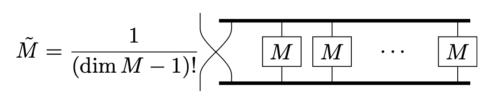

In Penrose graphical notation, a tensor is represented as a box with as many sticks as its order.
It is possible to distinguish between covariance and contravariance.
The downward stick represents covariance, and upward contravariance.
Kronecker delta is represented as a stick.
A horizontal thick stick represents antisymmetry.
Odd substitution of the position of the vertical stick reverses the sign.
In this notation, Levi-Civita symbol is displayed as below:
The product of covariant and contravariant Levi-Civita symbols \(\epsilon^{ij\cdots k}\epsilon_{pq\cdots
r}\) is drawn as the below, according to Penrose's article.
Determinant and inverse matrix
Levi-Civita symbols are often used for determinants and inverse matrices.
From now on, we have the lower indices to represent rows, and upper indices to represent columns;
\begin{align}
M
=
\left(\begin{matrix}
a & b \\ c & d
\end{matrix}\right)
\Longrightarrow
M_1^2=b.
\end{align}
Determinant
According to the definition, \(n\times n\) matrix \(M\) satisfies
\[
\det M
=
\sum_{\sigma\in\mathfrak{S}_n}
\mathrm{sgn}(\sigma)
M_1^{\sigma_1}\cdots M_n^{\sigma_n},
\]
with symmetry group \(\mathfrak{S}_n\).
Note that the sign of permutation is equivalent to that of Levi-Civita symbol, i.e. \(\mathrm{sgn}(\sigma)=\epsilon_{\sigma_1\cdots\sigma_n}^{1\cdots n}\).
Therefore
\[
\det M
=
\epsilon_{\sigma_1\cdots\sigma_n}^{1\cdots n}
M_1^{\sigma_1}\cdots M_n^{\sigma_n},
\]
but it is difficult to manipulate the lower indices in this notation, then we use the following representation:
Since we get the representation of determinant in graphical notation, we anticipate that cofactor expansion can be interpreted in an intrinsic way.
Using the notation of determinant with two Levi-Civita symbols,
Comparing with graphical notation of determinant, \(M_{\tau_j}^{\sigma_i}\) corresponds to the
first \(M\) , and remaining \(n-1 \:M\)'s composes a cofactor.
If you do not run either index of Levi-Civita symbols, the branch of the fist \(M\) is cut off to
leave the same indices:
This has to be the product of matrix \(M\) and its adjugate \(\tilde{M}\).
Thus the adjugate
matrix is,

Inverse matrix
According to definition, \(M^{-1}=\tilde{M}/\det M\), i.e.,
This formula is represented with Kronecker delta as the belows:
Connect top three points and bottom without leaks and doubles.
That is, the number of terms is permutation 3!.
The signing can be determined to some extent by "how many intersections there are".
Nevertheless, as shown in the figure below, this rule can be broken if the line is written in a
circuitous manner, so it is safe to consider "how many substitutions will return to the
even-substitution form."
Contraction formulas
When using Levi-Civita symbol, some indexes are usually the same; connect the same indexes with
Kronecker delta.
If all indexes are the same, \(\epsilon^{ijkl}\epsilon_{ijkl}=4!=24\).
Minkovski metric
The above argument only holds in Euclid metric, \(g_{ij}=g^{ij}=\delta_{ij}\).
Since the three spacial or one time component of metric tensor is negative in Minkovski metric,
covariant and contravariant tensor has opposite signs.